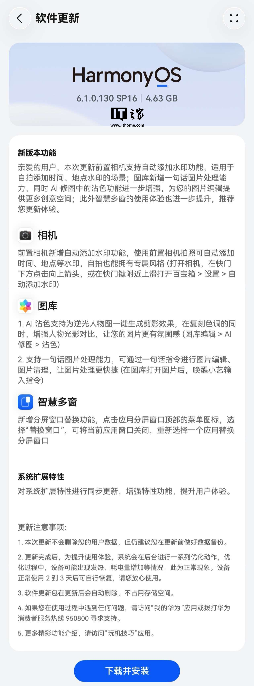

업데이트 정보
IT홈의 보도에 따르면, Huawei Pura X Max 가로형 폴더블 디스플레이 스마트폰을 대상으로 HarmonyOS 6.1.0.130 SP16 버전 업데이트가 배포되었습니다. 시스템 패키지 크기는 약 4.63GB이며, 이번 업데이트는 전면 카메라 자동 워터마크 추가 및 갤러리 내 한 문장 이미지 처리 기능 등을 포함하고 있습니다.
주요 기능
- 전면 카메라 자동 워터마크: 전면 카메라 촬영 시 시간, 장소 등의 워터마크를 자동으로 추가하여 셀피에 고유한 스타일을 부여합니다.
- AI 컬러 매칭(沾色): 역광 인물 사진에서 한 번의 클릭으로 실루엣 효과를 생성하며, 색조를 유지하면서 인물의 빛과 그림자 대비를 강화해 더욱 분위기 있는 이미지를 연출합니다.
- 한 문장 이미지 처리: 한 문장의 명령어를 통해 이미지 편집, 원클릭 영상 제작, 이미지 정리 등을 수행하여 보다 신속하게 이미지를 처리할 수 있습니다.
- 분할 화면 창 교체 기능: 분할 화면의 상단 메뉴 아이콘을 클릭하고 '창 교체'를 선택하면 현재 앱을 닫고 다른 앱으로 즉시 교체할 수 있습니다.
시스템 최적화
- 시스템 확장 기능 업데이트: 시스템 확장 기능을 동기화하여 기능을 강화하고 사용자 경험을 향상했습니다.
Huawei는 현재 순차적으로 업데이트를 배포하고 있으며, 아직 업데이트를 받지 못한 사용자는 기다려야 합니다.
총평
Huawei Pura X Max용 HarmonyOS 6.1.0.130 SP16 업데이트가 배포되었습니다. 이번 업데이트는 전면 카메라 워터마크 추가, AI 기반 이미지 편집 및 한 문장 명령을 통한 간편한 처리 기능, 분할 화면 편의성 개선 등 다양한 기능을 포함하고 있습니다.
系统版本更新信息
Huawei Pura X Max 横向阔折叠手机已推送 HarmonyOS 6.1.0.130 SP16 版本更新。本次更新的系统包大小约为 4.63GB。
新增功能与优化内容
- 前置相机水印： 支持在自拍时自动添加时间、地点等信息，提供更多个性化风格。
- AI沾色： 为逆光人物图一键生成剪影效果，增强光影对比度。
- 一句话图片处理： 用户可通过唤醒小艺并输入指令，快速实现图片编辑、一键成片及图片清理。
- 分屏功能优化： 新增“替换窗口”功能，支持在分屏模式下快速切换当前应用窗口。
- 系统扩展特性： 同步更新相关特性，旨在提升整体用户体验。
推送说明
Huawei 目前采取分批推送策略，尚未收到系统升级通知的用户需继续等待。
总结
Huawei Pura X Max 推送了 HarmonyOS 6.1.0.130 SP16 版本更新。本次更新包含约 4.63GB 的包体，重点强化了前置相机水印、AI 沾色及一句话图片处理等影像功能，并优化了分屏操作体验。
アップデート情報
ITホームの報道によると、Huawei Pura X Max 横型折りたたみディスプレイスマートフォン向けにHarmonyOS 6.1.0.130 SP16バージョンのアップデートが配信されました。システムパッケージサイズは約4.63GBで、今回のアップデートにはフロントカメラの自動ウォーターマーク追加やギャラリー内の一文画像処理機能などが含まれています。
主な機能
- フロントカメラの自動ウォーターマーク：フロントカメラでの撮影時に時間や場所などのウォーターマークを自動的に追加し、自撮りに独自のスタイルを付与します。
- AIカラーマッチング（沾色）：逆光の人物写真において、ワンタップでシルエット効果を生成します。色調を維持しながら人物の光と影のコントラストを強調し、より情緒的な画像を演出します。
- 一文画像処理：一文のコマンド入力によって、画像の編集、ワンクリックでの動画制作、画像の整理などを実行でき、より迅速な画像処理が可能になります。
- 分割画面ウィンドウの入れ替え機能：分割画面の上部メニューアイコンをクリックし「ウィンドウの入れ替え」を選択することで、現在のアプリを閉じずに別のアプリへ即座に切り替えることができます。
システム最適化
- システム拡張機能のアップデート：システム拡張機能を同期させることで機能を強化し、ユーザー体験を向上させました。
Huaweiは現在順次アップデートを配信しており、まだ更新を受け取っていないユーザーは待機する必要があります。
総評
Huawei Pura X Max向けにHarmonyOS 6.1.0.130 SP16が配信されました。今回のアップデートでは、フロントカメラのウォーターマーク追加、AIベースの画像編集および一文コマンドによる簡便な処理機能、分割画面の利便性向上など、多様な機能が含まれています。
まとめ
Huawei Pura X Max向けにHarmonyOS 6.1.0.130 SP16が配信され、フロントカメラのウォーターマーク追加やAIによる高度な画像編集機能が追加されました。また、一文コマンドによる迅速な処理や分割画面の操作性向上など、ユーザー体験を向上させるためのシステム最適化が含まれています。
Update Information
According to a report by IT Home, the HarmonyOS 6.1.0.130 SP16 update has been released for the Huawei Pura X Max horizontal foldable display smartphone. The system package size is approximately 4.63GB. This update includes features such as automatic watermarks for the front camera and "one-sentence" image processing within the Gallery.
Key Features
- Front Camera Auto-Watermark: Automatically adds details such as time and location when using the front camera, providing a unique style to selfies.
- AI Color Matching: Creates silhouette effects for backlit portraits with a single click, enhancing the contrast between light and shadow while maintaining original tones to create more atmospheric images.
- One-Sentence Image Processing: Enables users to perform image editing, one-click video production, and image organization through a single text command for faster processing.
- Split Screen Window Swap: Allows users to instantly replace the current app with another by selecting "Swap Window" from the top menu icon in split-screen mode.
System Optimization
- System Expansion Update: Synchronized system expansion features to enhance functionality and improve the overall user experience.
Huawei is currently rolling out the update sequentially; users who have not yet received the update may need to wait.
Summary
The HarmonyOS 6.1.0.130 SP16 update for the Huawei Pura X Max introduces several new features, including front camera watermarks and AI-powered image processing tools. It also improves split-screen navigation and optimizes system expansion functions to enhance the overall user experience.
